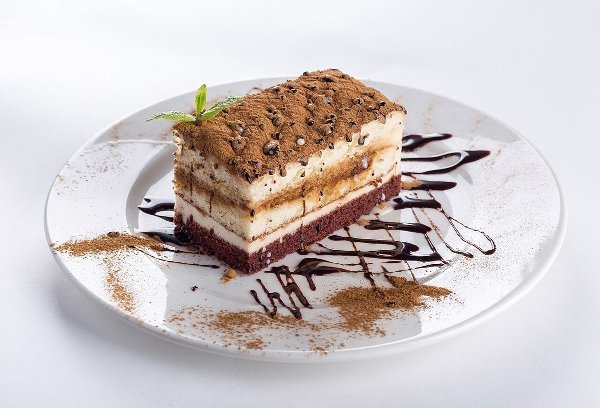
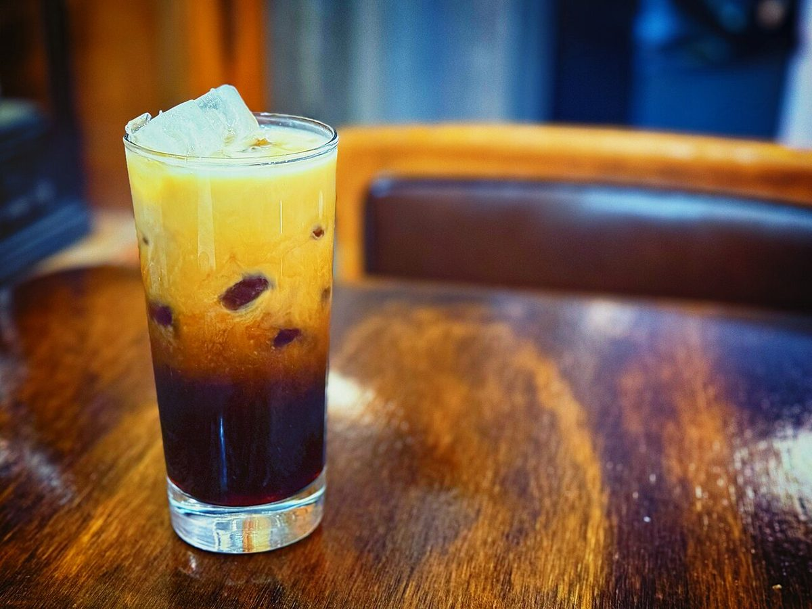
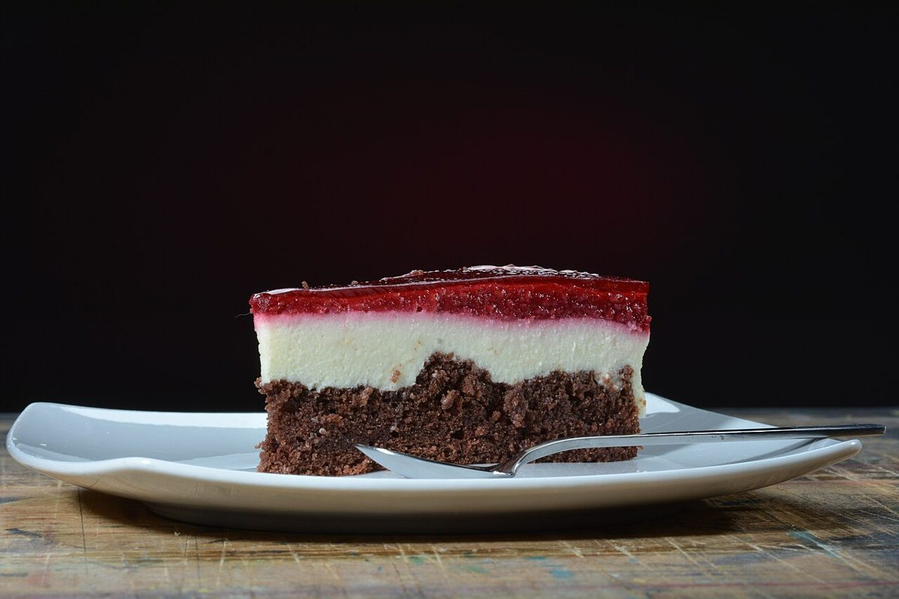
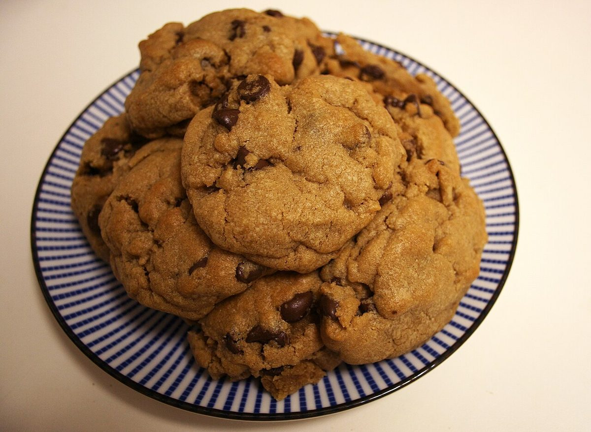
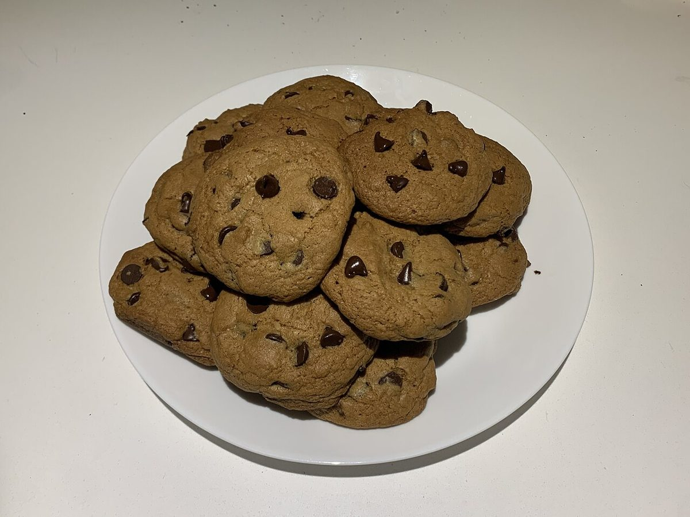

メニュー
内容は準備中です。

02
イメージ イメージ イメージ 
イメージ イメージ
イメージ写真
これらの写真はフリー素材のイメージで、実際のメニューや商品を示すものではありません。




ご不明な点は、お電話かInstagramからお気軽にどうぞ。
内容は準備中です。

これらの写真はフリー素材のイメージで、実際のメニューや商品を示すものではありません。




ご不明な点は、お電話かInstagramからお気軽にどうぞ。